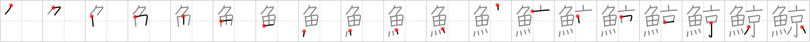

鯨
← →
whale

Reading:
On-Yomi: ゲイ — Kun-Yomi: くじら
Heisig story:
The whale swallows a whole school of fish, who turn their new abode into a proper little fish-capital.
Koohii stories:
1) [tanaquil] 25-4-2007(234): If fish were cities, the whale would surely be the capital.
2) [sethimayne] 25-10-2007(29): When the whale was first discovered it was the biggest fish people had ever seen. Stories exaggerated its size - people said it was as big as the entire capital city!
3) [Dakoina] 8-1-2009(20): When you're saying a whale is just a fish, you're making a capital mistake!
4) [ceeeps] 3-12-2007(11): Remember when a whale swam up the Thames. Everyone thought there was a big fish in the capital, but it was really a whale.
5) [mtheory7] 1-1-2010(10): A whale is like a fish (#171 魚) except it is as big as the capital (#312 京).